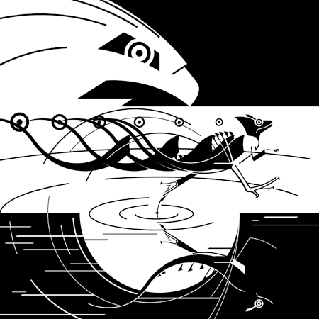

Designed symbol to represent a Basilisk Lizard and its unique ability to run on top of water
Designed image to depict above phrase utilizing only typography to convey the emotion of the situation
Designed series of images to graphically depict above phrase in equally increasing levels of complexity
Illustration
“As the Hawk
descended upon its
prey, the Basilisk Lizard ran across the water.”
Adobe Illustrator
11 x 11
symbol
text
graphic1
graphic2
graphic3
home